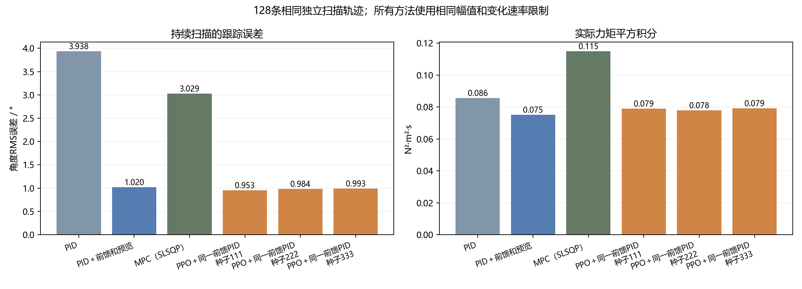
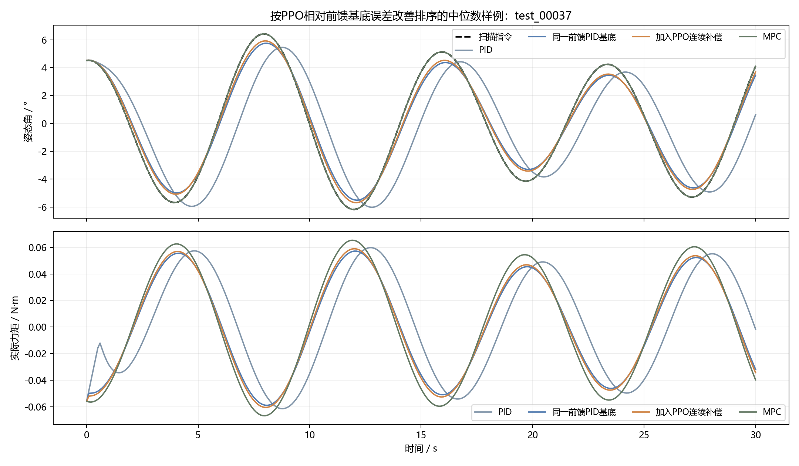

未证明三个正式种子均相对同一前馈PID基底获得稳定学习增量。
卫星持续跟随随时间变化的扫描指令。执行器力矩既不能超过±0.25 N·m，每秒也最多变化0.08 N·m；突然改变指令不会让真实力矩瞬间改变。这是连续控制任务，AI每0.1秒输出一次连续力矩补偿。
所有方法都能获得相同的姿态、角速度、实际力矩和未来3秒已知扫描指令。AI基本反馈使用已经整定的“PID＋模型前馈和预览”，关闭AI时严格恢复这一基底。
| 方法 | 平均角度RMS误差 / ° | 平均力矩平方积分 / N²·m²·s | 物理失败 |
|---|---|---|---|
| PID | 3.9381 | 0.08551 | 0/128 |
| PID_feedforward_preview | 1.0198 | 0.07516 | 0/128 |
| MPC_SLSQP | 3.0287 | 0.11492 | 10/128 |
| PPO_symmetry_seed_111 | 0.9526 | 0.07889 | 0/128 |
| PPO_symmetry_seed_222 | 0.9843 | 0.07786 | 0/128 |
| PPO_symmetry_seed_333 | 0.9931 | 0.07917 | 0/128 |

RMS越低表示持续跟踪越准确；力矩平方积分越低表示本研究定义的力矩使用代价越低。它不是实测电能。跟踪误差改善和代价上升可以同时发生，不能称为所有指标全面优越。
原TD3、PPO开发均未在固定综合验证目标上超越零补偿，原始尝试完整保留。后续追加声明采用较小补偿、低学习率、较长rollout，并利用物理反号对称性约束PPO演员：所有姿态、角速度和力矩同时反号时，输出补偿也反号。此结构从训练起保持一致，没有测试时修改动作，也没有PID动作标签。
AI是否增加作用，应看它相对同一前馈PID基底的比较。只比较普通PID，会把模型前馈和预览带来的收益也混算到AI上。本页同时报告两种比较。
这是单轴、理想传感器反馈、固定执行器约束的仿真。传统PID、前馈和预览经过开发与验证整定。MPC求解的是固定3秒预测时域和固定权重的凸二次规划；完整保存求解残差，但尚未进行全面的预测时域、终端代价和权重优化。因此结果只能比较本次实现，不能声称AI优于充分优化的所有MPC。
测试为128条独立扫描轨迹，每条30秒；模型冻结后才打开测试响应。1024回合、307200个区间完成全量物理、指令和指标回放，并以独立ODE积分检查代表区间。
完整报告 · 开发过程说明 · 学习增量与区间 · 全量核验
